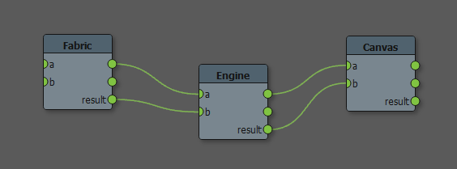

Fabric Engine 入門¶
概要¶
Fabric Engine 入門手引きへようこそ！
これは Fabric Engine の習得方法、 Fabric Engine を用いたワークフロー改善のためのステップ・バイ・ステップガイドです。
Fabric Engine は手軽に利用でき、可搬性の高い開発環境です。VFXスタジオやゲームスタジオにおける、高性能なカスタムツールを作成するコストとリスクを減らす手助けとなります。独自のスタンドアロンアプリの作成や、DCCツールの拡張 ―つまり、マルチスレッドやGPUあるいは、C++言語についてなど、従来は深い知識を必要とした事柄― 抜きに Fabric Engine を使用することで、楽に実現できるのです。
Fabric 2 には Fabricスタンドアロン と呼ぶ単体起動するユーティリティが DCC（デジタルコンテンツ作成）アプリ ―Autodesk Mayaや The Foundry MODO、Softimageなどへの統合と同様付属します。
Fabric Standalone を使用すれば Fabric Engine でのビジュアルプログラミングの標準的利用法に慣れる、もしくは、KLノードの試作に使用することもできます(より詳しい情報は Canvas ユーザガイド を参照)。
Fabric Canvas の統合に興味があるのであれば、このページに関連情報がそろっています。 Canvas をDCC内で使用しホストアプリの機能を100%の移植可搬性を保ったままより高性能に置き換えることができます！ Canvas をDCCから直接利用することに興味があれば、 Fabric DCC統合版のインストール セクションまで読み飛ばしてください。 Canvas ユーザーインターフェイスについてより詳しい情報は Canvas ユーザガイド を参照してください。
法人顧客であれば、Zendeskポータルを通じ気軽にご質問、チケットの登録を行ってください。もし無償ライセンス Fabric Engine を利用であれば Fabric Engine answers page よりご質問ください。